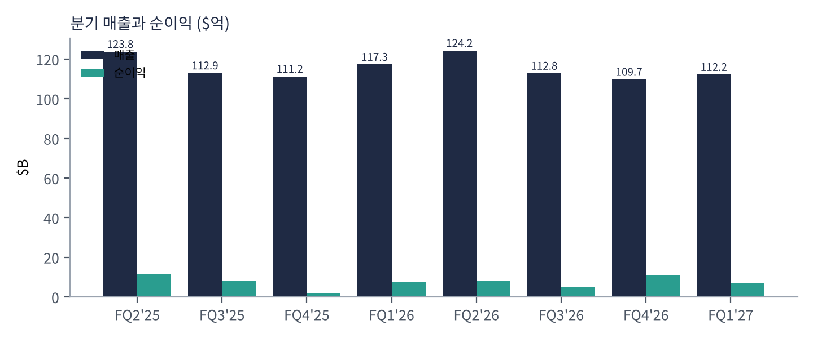
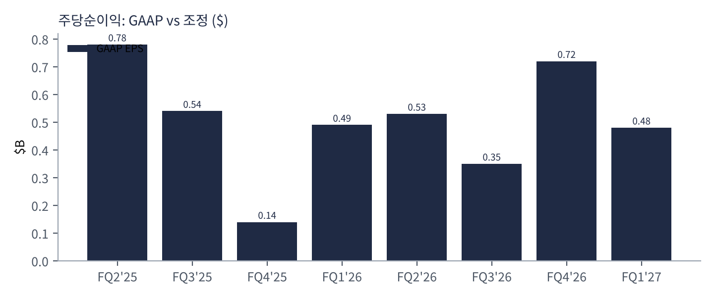
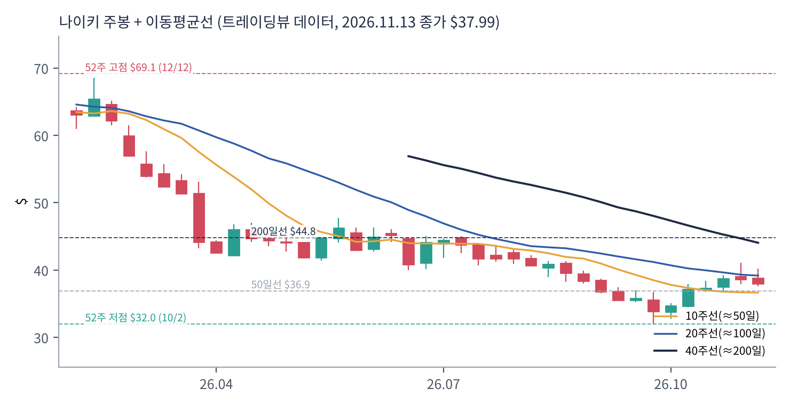
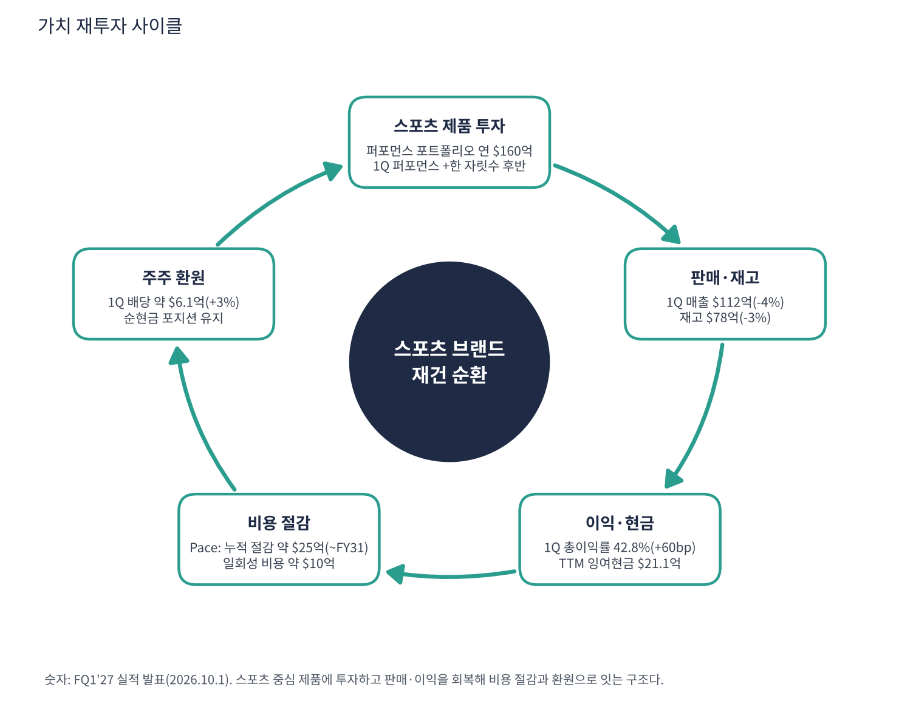

나이키는 신발·의류·장비를 나이키·조던·컨버스 브랜드로 파는 세계 최대 스포츠 브랜드 회사다. 스포츠 중심 재건을 진행 중이지만 FY27 매출과 EPS가 모두 감소할 것으로 가이던스를 낸 회사다.
| 항목 | 내용 |
|---|---|
| 종목 | Nike (NKE) · NYSE · 스포츠 신발·의류 · 오리건 비버튼 |
| 멀티플 | PER 18.2배(TTM, FY26 EPS 기준) · P/S 1.22배 (11/13 종가 $37.99) |
| 최근 분기(FQ1'27, 8월 말) | 매출 $112.0억(-4%), 총이익률 42.8%, EPS $0.48 |
| FY27 가이던스 | 매출 높은 한 자릿수 감소, 조정 EPS $1.15~1.35 |
| 현금·부채 | 스캐너: 현금 $83.7억, 총차입금 $110.7억, TTM 잉여현금 $21.1억 |
| 직책 | 인물 | 역할·특징 |
|---|---|---|
| 사장·CEO | 엘리엇 힐 | 2024년 취임. 스포츠 중심 '스포츠 오펜스'로 재건 |
| CFO | 데이브 덴턴 | 신임 CFO. 비용·마진 관리와 Pace 실행 |
경영 스타일: '스포츠별로 조직·제품·마케팅을 맞추고 비용 구조를 새로 짠다'. Pace는 운영 모델 전환으로 FY31까지 누적 절감 약 $25억, 일회성 비용 약 $10억을 예상하고 지역 조직을 3개로 재편한다(FY28 적용).
러닝(페가수스 플러스 2·알파플라이 4), 맥스 쿠셔닝 점유율 확대. Pace로 조직·의사결정 단순화.
스포츠별 소비자 집단에 맞춘 제품과 세분화된 스포츠웨어로 소수 프랜차이즈 의존을 줄인다.
다음 실적발표(FQ2'27)는 세 가지 질문에 답하는 자리다.
질문 1. 매출 감소가 가이던스 안에서 멈추는가?
| 확인할 숫자 | 좋아지면 | 나빠지면 |
|---|---|---|
| FY27 매출 높은 한 자릿수 감소, 2Q는 EMEA 프로모션 비교 등으로 약 400bp 역풍 | 감소폭이 가이던스 안이면 ②판매 고리가 바닥을 다진다 | 감소폭이 더 커지면 재건 시점이 FY28 이후로 밀린다 |
질문 2. 스포츠 제품이 중국·조던·스포츠웨어 부진을 상쇄하는가?
| 확인할 숫자 | 좋아지면 | 나빠지면 |
|---|---|---|
| 퍼포먼스 +한 자릿수 후반, 조던 비중 13%(-중반 두 자릿수), 중국 부진 | 퍼포먼스 성장이 커지면 ①투자 고리가 입증된다 | 조던·중국이 더 줄면 총매출 회복이 지연된다 |
질문 3. 총이익률과 Pace 비용이 EPS 가이던스를 지키는가?
| 확인할 숫자 | 좋아지면 | 나빠지면 |
|---|---|---|
| 총이익률 42.8%, FY27 조정 EPS $1.15~1.35(Pace 약 $0.15 제외) | 가이던스 유지·상향이면 ③이익 고리가 유지된다 | 하향이면 PEG는 더 나빠지고 '산출 불가' 구간이 길어진다 |
한 줄 판정 규칙: 첫 질문이 가이던스 안에서 바닥을 확인하면 약한 고리(②판매)가 풀리고, 세 번째 질문이 나쁘면 EPS 감소 해석이 굳어진다.
일정: 2026-12-17 예정(트레이딩뷰 일정, 회사 확정 확인 필요).
| 분기 | 매출 | 순이익 | EPS | 조정 EPS | 특이 사항 |
|---|---|---|---|---|---|
| FQ2'25(24.11) | $123.8억 | $11.6억 | 0.78 | – | |
| FQ3'25(25.2) | $112.9억 | $7.9억 | 0.54 | – | |
| FQ4'25(25.5) | $111.2억 | $2.1억 | 0.14 | – | |
| FQ1'26(25.8) | $117.3억 | $7.3억 | 0.49 | – | |
| FQ2'26(25.11) | $124.2억 | $7.9억 | 0.53 | – | |
| FQ3'26(26.2) | $112.8억 | $5.2억 | 0.35 | – | FY26 구조조정·감원 비용 반영 |
| FQ4'26(26.5) | $109.7억 | $10.7억 | 0.72 | – | |
| FQ1'27(26.8) | $112.2억 | $7.1억 | 0.48 | – | 1Q 매출 -4%, 총이익률 42.8% |


값은 트레이딩뷰 스캐너 분기 이력(회계연도 기준)이다. 나이키는 분기 조정 EPS 이력을 따로 발표하지 않아 조정 EPS 열은 '–'다(FY27 조정 EPS 가이던스만 있음). 분기 설비투자는 구하지 못했다.
흐름 요약: 매출이 FQ2'25 $123.8억에서 FQ1'27 $112.2억으로 줄었고, EPS는 $0.14~0.78 사이에서 움직였다. FY27은 매출 높은 한 자릿수 감소 가이던스다.
| 항목 | 값 | 비고 |
|---|---|---|
| 퍼포먼스 포트폴리오 | 연 $160억(FY26) | 1Q +한 자릿수 후반 |
| 조던 브랜드 | 매출 비중 13% | 1Q -중반 두 자릿수(회사) |
| 도매 매출 | $68억(-1%) | 중국 감소·북미 증가 |
| 재고 | $78억(-3%) | 믹스 변화(회사) |
스포츠 제품은 성장하지만 스포츠웨어·조던·중국이 부진하다. 지역·제품별 전체 매출 표는 이번에 구하지 못했다.
나이키는 '스포츠 제품 중심으로 브랜드 건강을 회복하고 비용 구조를 낮추는 것'을 목표로 한다.
| 축 | 최근 움직임 |
|---|---|
| 제품 | 러닝·농구·축구 중심 스포츠 오펜스 |
| 조직 | Pace: 지역 3개 조직 재편, 인력 감축 |
| 환원 | 1Q 배당 약 $6.1억(+3%) |

| 이동평균 | 값 | 종가 대비 | 해석 |
|---|---|---|---|
| 5일선 | $38.52 | -1.4% | 현재가가 아래 |
| 20일선 | $38.34 | -0.9% | 현재가가 아래 |
| 50일선 | $36.89 | +3.0% | 현재가가 위 |
| 100일선 | $39.22 | -3.1% | 현재가가 아래 |
| 200일선 | $44.79 | -15.2% | 현재가가 아래 (-15%) |
주봉 흐름: 52주 고점 $69.14(12/12), 52주 저점 $31.97(10/2). 현재가 $37.99는 200일선 $44.79보다 아래, 50일선 $36.89보다 위에 있다.
| 규칙 | 기준 | 현재 값 | 신호 |
|---|---|---|---|
| 장기 추세 필터 | 종가 vs 200일선 | $37.99 < $44.79 | 매도 |
| 중장기 교차 | 50일선 vs 200일선 | $36.89 < $44.79 | 매도 |
| 단기 교차 | 20일선 vs 50일선 | $38.34 > $36.89 | 매수 |
| 돈키언 채널 | 55일 고가 $41.10 / 저가 $31.97 | 중간값 $36.53 위 | 매수 |
| 1개월 모멘텀 | 21거래일 수익률 | +2.3% (기준 $37.14) | 매수 |
| 3개월 모멘텀 | 63거래일 수익률 | -2.8% (기준 $39.09) | 매도 |
| 6개월 모멘텀 | 126거래일 수익률 | -9.3% (기준 $41.88) | 매도 |
| 12개월 모멘텀 | 252거래일 수익률 | -40.8% (기준 $64.20) | 매도 |
| 종합 (8개 평균) | -0.25 | 매도 우위 |
해석: 8개 신호 중 매수 3개, 매도 5개(점수 -0.25, 매도 우위)다. 14일 ATR $1.25 (3.3%).
| 가격·조건 | 무엇이 바뀌나 | 의미 |
|---|---|---|
| $44.79 돌파 | 200일선 | 매도 → 매수 |
| 50일선이 200일선 위로 | 50/200 교차 | 매도 → 매수 |
| $39.09 돌파 | 3개월 기준가 | 매도 → 매수 |
| $41.88 돌파 | 6개월 기준가 | 매도 → 매수 |
| $64.20 돌파 | 12개월 기준가 | 매도 → 매수 |
| 20일선이 50일선 위로 | 20/50 교차 | 이탈하면 매수 → 매도 |
| $36.53 돌파 | 돈키언 중간값 | 이탈하면 매수 → 매도 |
| $37.14 돌파 | 1개월 기준가 | 이탈하면 매수 → 매도 |
| 구분 | 가격대 | 근거 |
|---|---|---|
| 저항 1 | $38.34 | 20일선 |
| 저항 2 | $38.52 | 5일선 |
| 지지 1 | $36.89 | 50일선 |
| 지지 2 | $31.97 | 55일 저점 |
점수는 -0.25(매도 우위)다. 14일 ATR은 $1.25로 현재가의 3.3%다. 가까운 저항 $38.34을 종가로 넘는지와 가까운 지지 $36.89를 지키는지가 신호 전환의 기준이다. (내 가정, 매매 권유 아님)
| 악재 요인 | 내용 | 강도 |
|---|---|---|
| 매출 감소 | FY27 매출 높은 한 자릿수 감소, 2Q 약 400bp 역풍 | 높음 |
| 중국·조던 | 조던 -중반 두 자릿수, 중국이 가장 큰 부담 | 높음 |
| 구조조정 | Pace 감원·일회성 비용 약 $10억 | 중간 |
| EPS 감소 | FY27 조정 EPS $1.15~1.35 vs FY26 $2.09 | 높음 |
| 티커 | 회사 | PER(TTM) | PEG | P/S | EPS 성장(YoY) |
|---|---|---|---|---|---|
| NKE | 나이키 | 18.2배 | 2.61 | 1.22배 | +7% |
| LULU | 룰루레몬 | 8.7배 | – | 1.06배 | -16% |
| DECK | 데커스 | 11.5배 | 0.94 | 2.05배 | +12% |
| ONON | 온 | 20.5배 | 0.19 | 2.64배 | +107% |
| ADDYY | 아디다스(OTC) | 18.1배 | 0.43 | 1.06배 | +42% |
NKE 첫 행은 스캐너 값이다. LULU는 EPS가 감소해 PEG가 없다. ADDYY는 OTC 시세다.
나이키는 현금성 자산 $83.7억에 비해 총차입금 $110.7억이 많아 순차입 약 $27.0억이지만, 회사는 순현금 포지션이라고 설명했다(리스·정의 차이, 확인 필요). TTM 잉여현금은 $21.1억이다.
| 지표 | 값 | 계산·출처 | 해석 |
|---|---|---|---|
| 현금 | $83.7억 | 스캐너 | FQ1'27 현금·단기투자 $84억(회사) |
| 총차입금 | $110.7억 | 스캐너 | 리스 포함 여부 확인 필요 |
| TTM 잉여현금흐름 | $21.1억 | 스캐너 | TTM 매출 $458.9억 대비 약 4.6%(내 계산) |
| TTM EBITDA | $48.0억 | 스캐너 | 배당 연 약 $24억 규모보다 큼 |
| 기준 | 값 | 비고 |
|---|---|---|
| P/S (TTM) | 1.22배 | 스캐너 |
| 동종 | LULU 1.06, DECK 2.05, ONON 2.64, ADDYY 1.06 | 11/13 스캐너 |
해석: P/S 1.2배는 낮지만 매출이 줄고 이익률이 낮아져 P/S가 싼 근거가 되지 못한다. 매출 감소가 멈추는지가 우선이다.
| 지표 | 값 | 판정 |
|---|---|---|
| PER (GAAP TTM) | 18.2배 | FY26 EPS $2.09 기준 |
| PER (FY27 가이던스 중간) | 약 30.4배 | $37.99 ÷ 조정 EPS $1.25(내 계산) |
| 조정 EPS | – | 분기 조정 EPS 이력 없음 |
| TTM 잉여현금 마진 | 약 4.6% | $21.1억 ÷ 매출 $458.9억(내 계산) |
| 방식 | PER | EPS 성장률 | PEG | 판정 |
|---|---|---|---|---|
| 트레이딩뷰 (GAAP TTM) | 18.2배 | +6.9% | 2.61 | FY26 기저 |
| FY27 가이던스 기준(내 가정) | 약 30.4배 | 약 -40% | 산출 불가 | 가이던스 중간 $1.25 vs FY26 $2.09 |
판정: PEG 2.61은 1.0을 넘고, FY27 EPS가 감소하는 가이던스라 앞으로의 PEG는 산출 불가다.투자 적격(≤1.0) 구간이 아니다. 회복 시점이 확인될 때까지 PEG 판단은 유보된다.

나이키의 사이클은 스포츠 제품 투자 → 판매·재고 → 이익·현금 → 비용 절감 → 주주 환원이다. 스포츠 제품에 투자해 판매를 키우고, 이익과 비용 절감으로 환원한다.
| 고리 | 현재 숫자 | 고리 강도 | 약해지는 신호 |
|---|---|---|---|
| ① 스포츠 제품 투자 | 퍼포먼스 연 $160억 | 강함 | 성장이 전체를 못 메움 |
| ② 판매·재고 | 매출 -4%, 재고 -3% | 약함 | 스포츠웨어·중국 약세 지속 |
| ③ 이익·현금 | 총이익률 42.8%, 잉여현금 $21.1억 | 보통 | 관세·프로모션 |
| ④ 비용 절감 | Pace 누적 약 $25억 | 보통 | 감원·일회성 비용 $10억 |
| ⑤ 주주 환원 | 1Q 배당 약 $6.1억 | 보통 | EPS 감소 중 배당 부담 |
구조: ①은 강하지만 ②판매가 약해 사이클이 아직 돌지 않는다. 매출이 FY28까지 압박받는다는 회사 설명이 이 약한 고리를 보여준다.